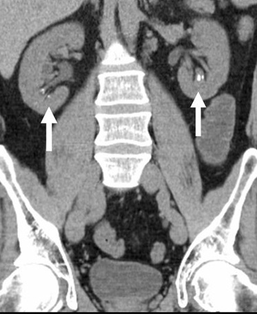

Ficha del catálogo
Litiasis renal
- Sistema
- Urinario
- Modalidad
- TC
- Región
- Abdomen y pelvis
- Dificultad
- Básico
La litiasis urinaria consiste en la formación de concreciones sólidas dentro del sistema colector renal o de la vía urinaria. La mayoría se compone de oxalato o fosfato de calcio, aunque también existen cálculos de ácido úrico, estruvita y cistina. Se manifiesta clásicamente como cólico renoureteral con dolor lumbar irradiado a la fosa ilíaca y hematuria.
Técnica
El estudio de elección es la tomografía computarizada de abdomen y pelvis sin contraste, con cortes finos desde los polos renales superiores hasta la sínfisis del pubis. Se revisan reconstrucciones coronales y sagitales para seguir el trayecto ureteral completo. El ultrasonido se emplea como primera línea en embarazadas y en pacientes jóvenes con episodios repetidos.
Qué observar
- Foco hiperdenso intraluminal en el trayecto de la vía urinaria
- Dilatación pielocalicial y del uréter proximal al cálculo
- Trabeculación de la grasa perirrenal y periureteral
- Signo del anillo de tejido blando alrededor del cálculo ureteral
- Tamaño máximo y localización precisa del cálculo
- Asimetría en el grosor o realce renal que sugiera obstrucción
Hallazgos
En tomografía sin contraste se identifica una imagen puntiforme u ovalada de alta atenuación en el sistema colector, uréter o vejiga. Suele acompañarse de hidronefrosis, hidrouréter y estriación de la grasa perirrenal cuando la obstrucción es aguda. En ultrasonido el cálculo aparece como foco ecogénico con sombra acústica posterior y con frecuencia genera artefacto de centelleo en Doppler color.
Perlas
Prácticamente todos los cálculos urinarios son visibles en tomografía sin contraste, incluso los radiolúcidos en radiografía simple como los de ácido úrico, porque la técnica detecta diferencias de atenuación y no solo el contenido cálcico. La excepción notable son los cálculos asociados a algunos fármacos, que pueden pasar desapercibidos.
Diagnóstico diferencial
- Flebolito pélvico
- Es redondeado, de bordes lisos, suele tener centro radiolúcido y se localiza fuera del trayecto ureteral; carece del anillo de tejido blando.
- Calcificación vascular
- Sigue un trayecto lineal o tubular paralelo a los vasos y no se asocia a dilatación de la vía urinaria.
- Nefrocalcinosis
- Los depósitos cálcicos son difusos en el parénquima medular o cortical, no intraluminales, y no producen obstrucción.
Simuladores
- Flebolitos venosos pélvicos
- Ganglios linfáticos calcificados
- Calcificaciones de la pared arterial ilíaca
Por modalidad
- TC
- Detecta cálculos de casi cualquier composición, define tamaño, localización y grado de obstrucción, y permite estimar la densidad en unidades Hounsfield para orientar el tratamiento.
- US
- Muestra hidronefrosis y cálculos en pelvis renal y unión ureterovesical sin radiación; el artefacto de centelleo aumenta la sensibilidad para cálculos pequeños.
Protocolo
Tomografía de abdomen y pelvis sin medio de contraste, cortes de 1 a 3 milímetros, paciente en decúbito supino y en apnea. Se reconstruye en planos coronal y sagital con ventana ósea y de partes blandas. Si se requiere valorar la anatomía de la vía urinaria puede añadirse una fase excretora diferida.
Clasificación
La estratificación práctica se basa en el tamaño y la localización: Cálculos menores de 5 milímetros tienen alta probabilidad de expulsión espontánea, los de 5 a 10 milímetros probabilidad intermedia y los mayores de 10 milímetros suelen requerir intervención. La densidad en unidades Hounsfield ayuda a predecir la respuesta a litotricia extracorpórea, con menor éxito por encima de 1000 unidades.
Errores frecuentes
- Confundir un flebolito pélvico con un cálculo ureteral distal por no seguir el trayecto del uréter corte a corte
- Informar ausencia de litiasis en radiografía simple sin advertir que los cálculos de ácido úrico son radiolúcidos
- Pasar por alto la obstrucción cuando la hidronefrosis es leve o el cálculo ya migró a la vejiga

litiasis cálculo renal cólico renoureteral hidronefrosis urolitiasis tomografía sin contraste vía urinaria